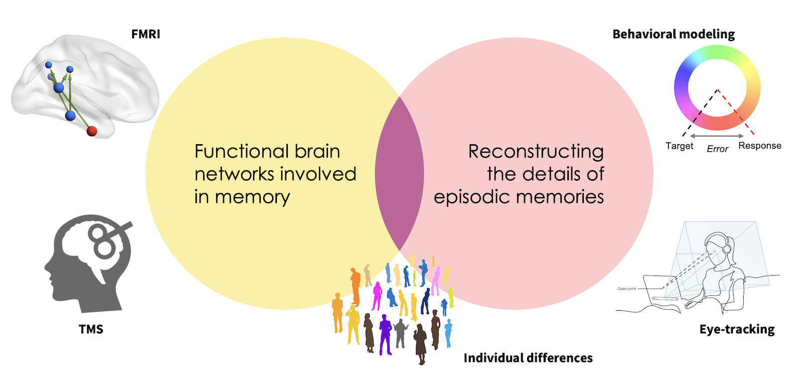
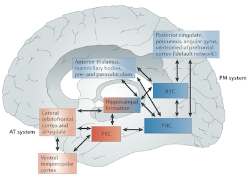

Research
In the Memory Modulation Lab, we use the tools of cognitive neuroscience to answer questions about memory and the brain.
By establishing the basic mechanisms supporting human memory, our research helps to provide a foundation for:
- identifying ways to improve learning and memory in day-to-day life.
- revealing what might be going on when our memory systems break down (e.g., in neurodegenerative disorders).
- understanding why our memories sometimes seem to work against us (e.g., in anxiety and mood disorders).
This research would not be possible without grants from the National Institute of Mental Health, National Science Foundation, and Brain and Behavior Research Foundation.
Lab approach
Our research incorporates multiple techniques for understanding cognitive and brain function, including functional neuroimaging, non-invasive brain stimulation, behavioral modeling, and eye-tracking. This combination of techniques allows us to characterize both the brain network interactions and cognitive processes involved in reconstructing episodic memories.

How does the brain store and remember the details of past events?
Memories are selective. Some events are remembered vividly while others are largely forgotten. Even within a particular memory, some event details may be remembered faithfully while others are lost. One of the aims of our research is to understand the cognitive and brain mechanisms that lead to variability in the quality of memory. We want to be able to predict not only whether someone will remember an event, but what they will remember about it and how that will influence their subjective experience of memory. To achieve this goal, we combine novel experimental designs with advanced techniques for understanding cognitive and brain function, including functional neuroimaging, eye-tracking, computational modeling, and non-invasive brain stimulation. In particular, we have been optimizing methods for reading out the quality of one’s memory, and then using this information to develop predictive models linking memory features to patterns of brain activity.
How do functional brain networks interact to support episodic memory?

For several decades, research on the neural basis of memory has focused on the medial temporal lobes (MTL), including the hippocampus and its surrounding cortical areas. It is now increasingly apparent, however, that functional differences among MTL regions are related to their participation in distinct cortical networks that are themselves dissociable across multiple cognitive domains. Based on these observations, we have argued that memory function can be best understood as arising from distinct yet interacting cortico-hippocampal systems: an anterior temporal system that supports representations of items and their significance, and a posterior medial system that supports their integration into a contextual framework. As these two networks interact to contribute different aspects of episodic memory, adopting this network perspective may improve our understanding of the complexity of episodic memory as well as its ability to be flexibly modulated. In our lab, we use functional neuroimaging and non-invasive brain stimulation to characterize the network interactions that support the integration and reconstruction of complex events.
How does emotion interact with memory processes?
Emotional events tend to be remembered more vividly than neutral events, but not all event details benefit from the enhancing influence of emotion on memory. A goal of our research is to understand how emotion acts to enhance, filter, and reshape memories through its impact on medial temporal lobe function. We have found evidence for the idea that there are dissociable pathways supporting episodic memory for emotional and contextual information, suggesting that emotion might bias memory networks to favor some types of memory representations over others. Recently, we have started to look at emotion-memory interactions from a new perspective, investigating the role of memory processes in mediating cognitive reappraisal, an emotion regulation technique. We want to know whether and how memory reconstruction processes can be leveraged to make emotional memories feel better.